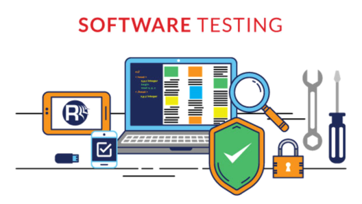

Playwright

While developping an software or learning to do so, you definitely heard about software testing. In this article we will talk about software testing , its advantages , types and we will focus on End To End (E2E) testing in order to introduce Playwright as it's starting to make its place in E2E testing world. So let's begin with defining software testing :
What is Software Testing :
Software testing is a process, to evaluate the functionality of a software application with an intent to find whether the developed software met the specified requirements or not and to identify the defects to ensure that the product is defect-free in order to produce a quality product.
Why do we need Software Testing :
Software testing enables us to detect defects in code before that the software is used. In our daily life we are interacting with systems, like online shoppin g, food delivery, banking and more other usecases ... If the software we use idn't properly used that may cause serious damages like in health or financial and security domains.
Advantages :
Some of the reasons why testing become a very significant and integral part of the field of information technology are as follows. These are the benefits of software testing.
- Cost-effectiveness
- Customer Satisfaction
- Security
Product Quality
Cost-effectiveness
As a matter of fact, design defects can never be completely ruled out for any complex system.
It is not because developers are careless but because the complexity of a system is intractable.
If the design issues go undetected, then it will become more difficult to trace back defects and rectify it. It will become more expensive to fix it.
Sometimes, while fixing one bug we may introduce another one in some other module unknowingly. If the bugs can be identified in the early stages of development then it costs much less to fix them.
That is why it is important to find defects in the early stages of the software development life cycle.
One of the benefits of testing is cost-effectiveness.
It is better to start testing earlier and introduce it in every phase of the software development life cycle and regular testing is needed to ensure that the application is developed as per the requirement.
- Customer Satisfaction
In any business, the ultimate goal is to give the best customer satisfaction.
Software testing improves the user experience of an application and gives satisfaction to the customers. Happy customers mean more revenue for a business.
- Security
This is probably the most sensitive and vulnerable part of testing. Testing (penetration testing for example) helps in product security.
Hackers gain unauthorized access to data. These hackers steal user information and use it for their benefit. If your product is not secured, users won’t prefer your product. Users always look for trusted products. Testing helps in removing vulnerabilities in the product.
- Product Quality
Software Testing is an art that helps in strengthening the market reputation of a company by delivering a quality product to the client as mentioned in the requirement specification documents.
Due to these reasons, software testing becomes a very significant and integral part of the Software Development process.
We may hear about many software testing types, so what are they ?
Software Testing Types :
- Manual Testing :
Manual testing is the process of testing the software by hand to learn more about it, to find what is and isn’t working.
This usually includes verifying all the features specified in requirements documents, but often also includes the testers trying the software with the perspective of their end user’s in mind.
- Automation Testing :
Automation testing is the process of testing the software using an automation tool to find the defects.
In this process, testers execute the test scripts and generate the test results automatically by using automation tools.
Some of the famous automation testing tools for functional testing include Selenium and Katalon Studio.
Selenium is no longer a strange name for web application testers. It offers powerful capabilities like cross-browser testing but is difficult to learn for those new to automation or with limited programming experience.
Testing Levels
- Unit Testing
- Integration Testing
- System Testing
Acceptance Testing
Unit Testing
Unit Testing is done to check whether the individual modules of the source code are working properly. i.e. testing each and every unit of the application separately by the developer in the developer’s environment. It is AKA Module Testing or Component Testing.
- Integration Testing
Integration Testing is the process of testing the connectivity or data transfer between a couple of unit tested modules. It is AKA I&T Testing or String Testing.
- System Testing (End to End Testing)
It’s a black box testing. Testing the fully integrated application is also called as an end to end scenario testing. To ensure that the software works in all intended target systems. Verify thorough testing of every input in the application to check for desired outputs. Testing of the user’s experiences with the application. To learn about System Testing, check out our detailed System Testing Guide.
- Acceptance Testing
To obtain customer sign-off so that software can be delivered and payments received.
In our article we will focus on the End to End testing level.
End to End Testing :
As we said earlier , End to End Testing is a level of Software Testing that is performed on a complete and fully integrated application to evaluate the system’s compliance with its specified requirements.
Its purpose is to evaluate the end-to-end system specifications hence it is also known as End To End testing. It is to prevent application crashes and failures during its implementation of the production environment.
It verifies the completed system to ensure that the system works as intended or not.
It is performed by the Test Team that is independent of the Dev Team.
Prerequisites of System Testing:
- Ensure whether the Unit testing is done or not
- Ensure whether the Integration testing is done or not
- The software should be completely and fully developed
- Ensure the test environment is ready and it should be as close enough to the production environment.
For this section we are going to focus on an automation software called Playwright to talk more specifically about this level of testing.
Playwright :
What is Playwright?
Playwright is an open-source test automation library initially developed by Microsoft contributors. It supports programming languages such as Java, Python, C#, and NodeJS. Playwright comes with Apache 2.0 License and is most popular with NodeJS with Javascript/Typescript. Though Playwright is new to the market, we can hardly list the limitations as it supports multiple languages. People who want to migrate from Selenium to Playwright, can do it quickly since Playwright support C#, Java, and Python. Programming languages are not a barrier. Playwright’s first release was in January 2020, and it has gained a lot of popularity ever since.
Advantages :
Playwright contributors are extremely active in releasing new features every month, which are listed below:
- Easy Setup and Configuration: Being a Test Automation Framework, it just needs a configuration as the installation doesn’t take much time. Depending on the language we use with Playwright, the installation steps might change
- Multi-Browser Support: Chromium family browsers (Chrome, Edge), Webkit (Safari), and Firefox are all supported.
- Multi-Language Support: Playwright supports Java, C#, Python, Javascript/ Typescript making it a popular choice. Most of the modern open-source test automation frameworks miss this feature.
- Types of Testing: Playwright supports Functional, End to End, and API Testing. With a Third-party plugin, Playwright can be integrated with Accessibility Testing.
- Parallel Browser Testing: Playwright also supports the execution of simultaneous tests (AKA parallel testing) through Browser Context and can run parallel tests with multiple browsers. This scales up testing and comes in handy when multiple web pages have to be tested simultaneously.
- Support for Multiple Tab/Browser Window: Playwright supports multi-tab and multi-window. Some test cases need to verify the scenario by launching a new window and returning to the parent window. Playwright supports all different types of test cases.
- Built-in Reporters: Playwright framework, by default, comes with a lot of valuable reporters like List, Dot, Line, JSON, JUnit, and HTML Reporters. The exciting part is that with Playwright, one can create custom reporters. Playwright also supports third-party reporter Allure Report.
- Typescript Support out of the box: Zero configuration is required for typescript language support as it understands your typescript and javascript code.
- CI/CD Integration Support: Playwright supports CI/CD integration. It even provides docker images for some language bindings.
- Debugging Tools Support: Playwright provides many different debugging options making it developer-friendly. Some debugging options are Playwright Inspector, VSCode Debugger, Browser Developer Tools, and Trace Viewers Console Logs.
Limitations of Playwright Framework :
- No Support for IE11
- Playwright doesn’t support Native Mobile Apps
- Though Playwright documentation is excellent, we cannot expect much when it comes to community support. Since Playwright is new to the market user base is still growing.
Requirements & Installation :
In order to start using Playwright, only Node is required to be installed. And for the installation, it is actually a simple task to do ( A simple command npm init playwright@latest ).
Playwright & Puppeteer :
Since the playwright development team has worked on puppeteer also.Let's consider a comparison between the two technologies to see where the differences reside.

Sources